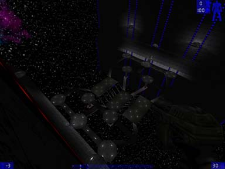

- Status update on this map: I lost the actual map files I was working on amidst scrubbing of this computer and installing a newer version of Windows. With a little work on the jails I think it could've been pretty ready to go, although if I went back now I'd probably scrub half the Geometry and redo it
 . In short, no release coming, I'm gonna leave this here though, as it might conceivably have some value as a journal, even though I can't see what . . In short, no release coming, I'm gonna leave this here though, as it might conceivably have some value as a journal, even though I can't see what .
- First off, where I began. The original concept here was a platform in the middle of space, and I thought it looked cool to have little diagonal beams coming off the sides up to two platforms on either side of it. I'm not sure I explained that very well. Anyways, it all started with one simple little set of maybe a dozen brushes that I like the look of. This is basically how all of my maps get started, imo it's part of the reason they aren't all that great. My recommendation is to start with an overall plan, like I did with JB-Nharwax. I really liked the way that turned out, certainly my best work yet, but it suffered from many many pathnoding bugs which I will probably redesign small sections of the level around to accomodate.
- Ok, once I had something I liked and decide to expand upon, I played around with different ways to connect the main platforms with some other ones above that. I originally based the next part of the design on those umbrella fountains outside of pools which probably don't even exist anymore . Basically, I was going to make a large pillar with a platform on top, with a series of cannons on the bottom to spray fire at opponents trying to make their way through the middle area. I eventually discarded this as profoundly too hard to handle, especially in a JB map where it doesn't just slow a player down, it literally ends their game for up to several minutes if the cannons get lucky.
- Eventually, I got a system of walkways and platforms leading up to a final middle-upper platform that I decided would be the entrance to the base. I then faced the problem that stalled my last couple attempts at space maps: How to make the base. The problem is, you can't simply make blocks and "dig" through them, because the player can see the outside of the base, and tunneling through the side of the skybox would look so extremely weird that its just not plausible. I've already seen two fixes:
- this one is ala CTF-Face: Make a cool outside shape like a pyramid or something and tunnel into that.
- The other option is kind of the lazy man's way out: Just plop a teleporter/warpgate type device at one end and make it come out inside a facility: bizarre and patently avoiding the issue. I decided that I would try a totally different approach:
- I just made a gargantuan wall, with a nice little "kink". (a sloped part in the middle right above the playing area with walls going up from either end, you'll get all this I hope in the pic I'll provide at some point). Then, I tunneled into and "behind" the wall. (The wall hides the fact that the interior base is carved out of space "behind" the fake backdrop).
- I then proceeded to create a rough outline of the base, which is basically centered around a central cylinder "release switch room". I added a glass window between the entrance and the cylinder, with paths leading from the entry around behind and up over the cylinder. There are also a couple transporters at the back that take you up to sniping platforms up high on the wall. I decided one upper approach I made was way too easy to release from, because you could just drop onto the switch ala JB-Raid, which is an excellent map, way beyond my capabilities, but really suffered from not plugging up the entrance right over the flag base.
- I decided upon what to me was a novel solution to this problem: I created blocks and added them flush to the surrounding wall and ceiling, and closed off the upper passage. This way, if I ever convert it to CTF I can just delete two brushes and the easy-in, not-so-easy-out route through the ceiling is functional again. I think you'll see where it used to go if you ride the lift up at the entrance to each base, it's kind of obvious the path used to branch both ways, but it works decently I think.
- I then added some cool "laser-like" effects on the sides of the gargantuan wall to give it some flavor. I ended up reworking the texture I used into bright red and blue to make navigation really really easy in the middle. Then, I put some decorations in the skybox and made it rotate. I like the effect of it as a large space station rotating to produce gravity (never mind that it wouldn't actually produce gravity but bah, it looks cool
 . .
- Just today I added in the jails, with neat-looking laser-doors, some nice screens, and a little "chatting bay" (which I'll make a masked texture label for tomorrow probably), which makes the ScreenSlidePageChat screen less likely to be "talked into" inadvertently. I then finished up with some trim on the interior room of the base, a platform, and a laser-trip like release switch which I may have to tweak a bit to look less tacky.
- My last bit today was playing around with the screens aligning them right and talking to SpoonDog on #utjb from inside my map.
Well, that's what I have so far, I'll keep writing as it comes, and get a couple pics up at some point to illustrate a couple key things I said.
My apologies for the extra-fuzzy pics, they were really beautiful until I overdid trying to make the file size smaller :-\
|
![[Bir-Dec-Alpha1]](images/bir-dec-alpha1.jpeg) View of the inside of jail with the chatting bay off to the left, scoreboard center, and news page right.
![[Bir-Dec-Alpha2]](images/bir-dec-alpha2.jpeg) View out from the inside of the blue jail.
![[Bir-Dec-Alpha3]](images/bir-dec-alpha3.jpeg) Entrance to blue base.

|